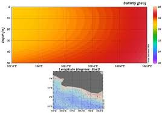
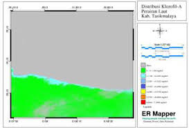

Profil Pulau Nusamanuk
Ditulis Oleh Bayu Maulana Faisal pada 27 Maret 2020
Pulau manuk atau yang telah mengalami perubahan nama berdasarkan penamaan asal-usul tempatnya menjadi Pulau Nusamanuk merupakan salah satu pulau kepunyaan Indonesia yang berada di luar selatan pulau jawa dan berbatasan langsung dengan Australia. Penamaan nusamanuk oleh warga setempat karena mengacu kepada identitasnya yang sering menjadi destinasi persinggahan burung-burung ketika terjadi migrasi. Hampir setiap pagi dan sore/malam dapat dijumpai berbagai macam jenis burung. Dalam Bahasa Sunda, Nusa berarti daratan, sedangkan Manuk berarti burung. Letak Pulau Nusamanuk berada pada koordinat 07°49'11" LS - 108°019'18" BT , yang secara administratif terletak di wilayah Desa Cimanuk, Kecamatan Cikalong, Kabupaten Tasikmalaya, Jawa Barat. Pulau ini jarang sekali dikunjungi wisatawan yang menyebabkan kondisi lingkungan dari Pulau Nusamanuk masih asri dan indah. Didalamnya tersimpan berbagai macam ekosistem dan sumber daya hayati, diantaranya; flora, sumberdaya perikanan, terumbu karang dan biota laut, serta potensi wisata.
Sumber Referensi: KKP, Wikipedia, Nulis.co.id
Salinitas Permukaan Laut
Ditulis Oleh Bayu Maulana Faisal pada 27 Maret 2020
Salinitas permukaan laut merupakan variabel terpenting dalam studi ilmu kelautan dan klimatologi. Salinitas merupakan banyaknya kadar garam yang terdapat di laut. Setiap perairan di dunia memiliki kadar garam atau salinitas yang berbeda. Semuanya dipengaruhi oleh beberapa faktor, yaitu penguapan. Apabila terdapat salah satu perairan yang ada dunia memiliki penguapan tinggi, hal ini berarti kadar garam atau salinitas permukaan air laut yang berada di perairan tersebut tinggi pula. Dalam arti singkat, apabila terjadi penguapan yang tinggi, mengakibatkan uap air naik ke atas awan. Uap air yang naik akibat penguapan, menyisakan senyawa garam tetap berada di permukaan laut. Akibat berkurang presentase antara H2O dengan senyawa garam, menjadikan salinitas permukaan air laut tersebut menjadi meningkat. Konsentrasi H2O yang menurun, sedangkan senyawa garam tetap di dalam permukaan air laut.
Salinitas merujuk pada jumlah garam-garam yang terdapat dalam 1 kg air laut bila seluruh karbonat telah diubah menjadi oksida, brom dan iod diganti dengan klor, dan seluruh materi organik dioksida secara sempurna (Purba dkk., 2015). Dari hasil analisis diketahui bahwa nilai salinitas perairan sekitar Nusamanuk masuk ke dalam kategori sesuai karena dapat kita lihat pada visualisasi sebaran tingkat salinitas ditunjukkan bahwa daerah terkait memiliki tingkat salinitas berkisar 33,5 - 34 ppt.
Sumber Referensi: (Hiwari,dkk.,2017)
Suhu Permukaan Laut
Ditulis Oleh Bayu Maulana Faisal pada 27 Maret 2020

Suhu merupakan salah satu faktor yang berperan penting dalam pertumbuhan dan kehidupan organisme. Suhu optimal untuk organisme di tambak berkisar antara 29 - 30°C (Cholik, 1988). Ketetapan ini juga didukung oleh teori dari Kementerian Kelautan dan Perikanan (2013) yaitu parameter kualitas air berada pada kisaran suhu optimal untuk mendukung kehidupan budidaya laut berada pada kisaran 28 - 30°C dengan batas toleransi antara 31 - 33°C.
Sumber Referensi: (Hiwari,dkk.,2017)
Kandungan Klorofil-a
Ditulis Oleh Bayu Maulana Faisal pada 27 Maret 2020
Klorofil merupakan senyawa kimia dengan rumus C55H720sN4Mg. Tipe klorofil yang paling sering diamati dalam pengamatan oseanografi adalah klorofil - a. Klorofil - a lebih sering digunakan dibandingkan tipe klorofil lainnya disebabkan jumlahnya merupakan yang paling dominan di lautan. Menurut Asih (2002) klorofil - a merupakan klorofil yang paling banyak terdapat dalam fitoplankton dan merupakan bagian terpenting dalam proses fotosintesis. Kandungan klorofil - a di perairan sekitar Nusamanuk berkisar 0,1140 - 2,2281 mg/m3.
Sumber Referensi: (Hiwari,dkk.,2017)